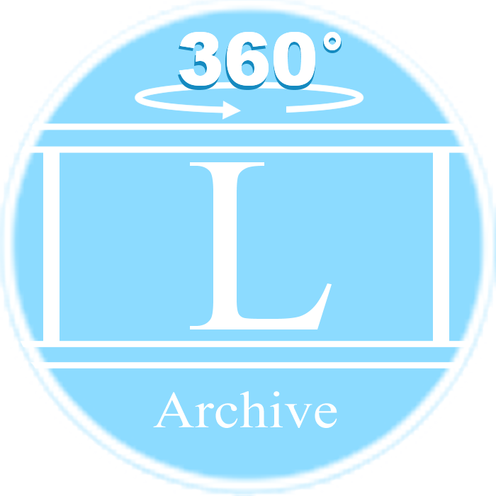

Q&A
Q. LiSA NaviとLiSA Archiveとはなんですか？
LiSA NaviとLiSA Archiveの機能はそれぞれ以下の通りです。
LiSA Navi
校内の教室や教室の説明、経路、時間割から次の教室の場所を表示することができるサイトです。
LiSA Archive
校内の風景を360°写真で見ることができるサイトです。
Q. LiSA Navi、LiSA Archiveの使い方は？
サイト右側にある「使い方」ボタンから確認できます
Q. サイトにバグを発見しました。どうすればいいですか？
メニューにある「フィードバック」からバグの内容を送信してください。
LiSA Naviの使用方法についての質問⇓
はい、ピンチ操作で拡大縮小できます。
Q. 校内マップを見る以外の使い方はあるの？
あります。
LiSA Naviではその他にも教室検索、教室情報を見る、ある教室から教室までの経路を検索する、時間割から次の教室を表示する機能などがあります。
Q.教室検索の方法は？
画面右下にある「教室検索」の欄に教室番号か教室名を入力してください。 その後、その下の「🔍」ボタンを押すことでその教室を水色で強調表示します。 ただし、教室名で検索する場合、完全一致でないと検索できません。
Q. 右下の「Info」ボタンは何？
検索した教室の説明を表示するボタンです。 また、その教室の2D写真を表示する機能も現在制作中です。
Q. 右下の「経路β」ボタンは何？
A. 現在地の教室から目的地の教室までの経路を検索する画面を表示するボタンです。
Q. 経路案内の方法は？
画面右下にある「経路β」ボタンを押してください。 その後、左にある青枠の「現在地」に今いる場所の近くの教室番号または教室名、右にある赤枠の「目的地」に行きたい教室の教室番号または教室名を入力してください。 入力後、下にある「検索」ボタンを押すことで、現在地を青色で、目的地を赤色で表示し、その経路を赤い線で結びます。 経路を削除したい場合、「経路β」ボタンを押し、左下にある「削除」というボタンを押すことで削除できます。 また、経路を削除しなくても新たに経路を検索することができます。
Q. スマホでも使えますか？
はい、ピンチ操作で拡大縮小できます。
閉じる
Lisa Navi
1F
≡
Menu
閉じる
検索

LiSArchive
サイト説明
校内の風景を360°写真で見れるサイトです。
現在開発中...
開く
Q&A
サイト説明
LiSA Navi、LiSArchiveについてのQ&Aです。
サイトの事で何かわからないところがあれば見てください。
開く
フィードバック
サイト説明
LiSA Navi、LiSArchiveについてのフィードバックを募集中です！
開く
アンケート
サイト説明
LiSA Navi、LiSArchiveの改善のため、アンケートにご協力ください。
開く
テスト
サイト説明
これは開発者向けです。気にしないでください。
開く
次の授業教室は ### です
閉じる
4F
3F
2F
1F
教室検索
経路
時間割
◀
非表示
🔍
Info
削除
検索
閉じる
閉じる
戻る
LiSA Navi とは
LiSA Naviの機能の名称
教室検索について
経路案内について
時間割機能について
QRコード
クレジット
教室番号
テスト
パネルをタッチすると閉じます
時間割
限\曜
月曜日
火曜日
水曜日
木曜日
金曜日
Ⅰ限
Ⅱ限
Ⅲ限
Ⅳ限
※閉じるを押すとcookieに保存されます。
インポート
エクスポート
閉じる